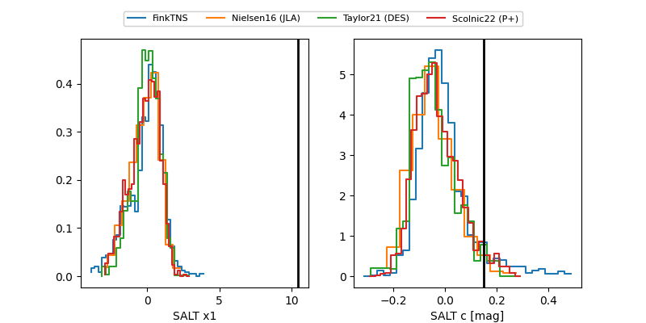

FINK: ZTF25abmrwry
Lasair: ZTF25abmrwry
ALeRCE: ZTF25abmrwry
TNS: 2025wcy
YSE: 2025wcy
ZTF25abmrwry (ztf,fink)
2025wcy (tns,yse)
equatorial (ra, dec) = (320.2318,-1.89518)
galactic (l, b) = (50.2191,-33.71069)

last ztfg=20.12, ztfr=19.92
4 ztfg, 7 ztfr detections